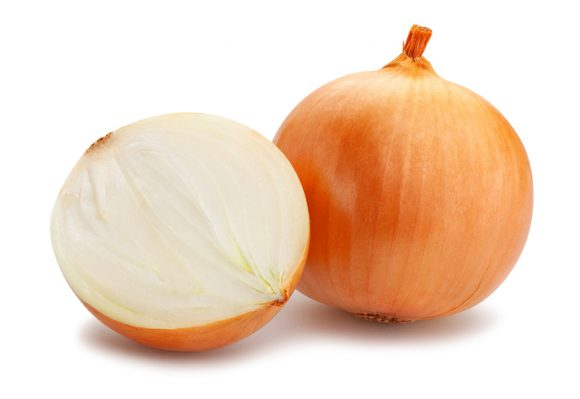
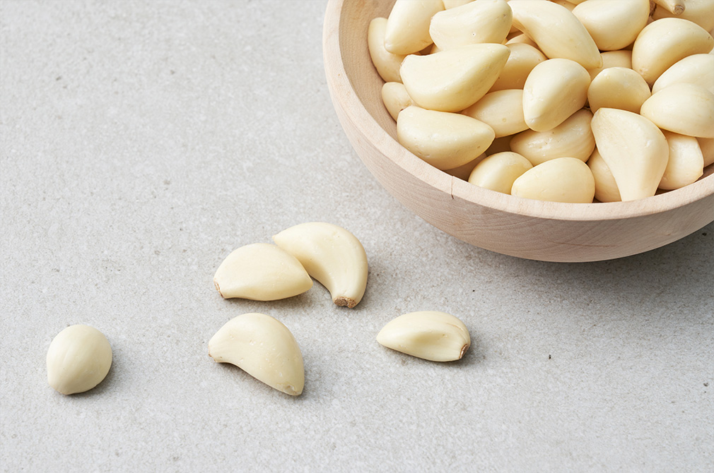
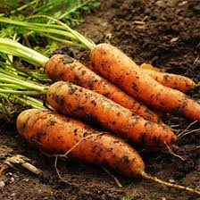

국내산 양파
국내산 양파
아주 싱싱한 국내산 양파
1개당 450원

국내산 마늘
국내산 마늘
마늘 30개가 들어있는 마늘 팩
1팩당 2500원

안녕하세요 양파마켓은 우리나라의 다양한 농산물, 특히 가정에서 잘 사용하는 작물들을 조금 더 싱싱하게 받기 위해 직접 농민들과 협력을 통한 직거래로 더 신선한 채소를 살 수 있게 하기 위해 노력하고 있습니다! 안녕하세요 양파마켓은 우리나라의 다양한 농산물, 특히 가정에서 잘 사용하는 작물들을 조금 더 싱싱하게 받기 위해 직접 농민들과 협력을 통한 직거래로 더 신선한 채소를 살 수 있게 하기 위해 노력하고 있습니다! 안녕하세요 양파마켓은 우리나라의 다양한 농산물, 특히 가정에서 잘 사용하는 작물들을 조금 더 싱싱하게 받기 위해 직접 농민들과 협력을 통한 직거래로 더 신선한 채소를 살 수 있게 하기 위해 노력하고 있습니다! 안녕하세요 양파마켓은 우리나라의 다양한 농산물, 특히 가정에서 잘 사용하는 작물들을 조금 더 싱싱하게 받기 위해 직접 농민들과 협력을 통한 직거래로 더 신선한 채소를 살 수 있게 하기 위해 노력하고 있습니다! 안녕하세요 양파마켓은 우리나라의 다양한 농산물, 특히 가정에서 잘 사용하는 작물들을 조금 더 싱싱하게 받기 위해 직접 농민들과 협력을 통한 직거래로 더 신선한 채소를 살 수 있게 하기 위해 노력하고 있습니다! 안녕하세요 양파마켓은 우리나라의 다양한 농산물, 특히 가정에서 잘 사용하는 작물들을 조금 더 싱싱하게 받기 위해 직접 농민들과 협력을 통한 직거래로 더 신선한 채소를 살 수 있게 하기 위해 노력하고 있습니다! 안녕하세요 양파마켓은 우리나라의 다양한 농산물, 특히 가정에서 잘 사용하는 작물들을 조금 더 싱싱하게 받기 위해 직접 농민들과 협력을 통한 직거래로 더 신선한 채소를 살 수 있게 하기 위해 노력하고 있습니다! 안녕하세요 양파마켓은 우리나라의 다양한 농산물, 특히 가정에서 잘 사용하는 작물들을 조금 더 싱싱하게 받기 위해 직접 농민들과 협력을 통한 직거래로 더 신선한 채소를 살 수 있게 하기 위해 노력하고 있습니다! 안녕하세요 양파마켓은 우리나라의 다양한 농산물, 특히 가정에서 잘 사용하는 작물들을 조금 더 싱싱하게 받기 위해 직접 농민들과 협력을 통한 직거래로 더 신선한 채소를 살 수 있게 하기 위해 노력하고 있습니다! 안녕하세요 양파마켓은 우리나라의 다양한 농산물, 특히 가정에서 잘 사용하는 작물들을 조금 더 싱싱하게 받기 위해 직접 농민들과 협력을 통한 직거래로 더 신선한 채소를 살 수 있게 하기 위해 노력하고 있습니다!